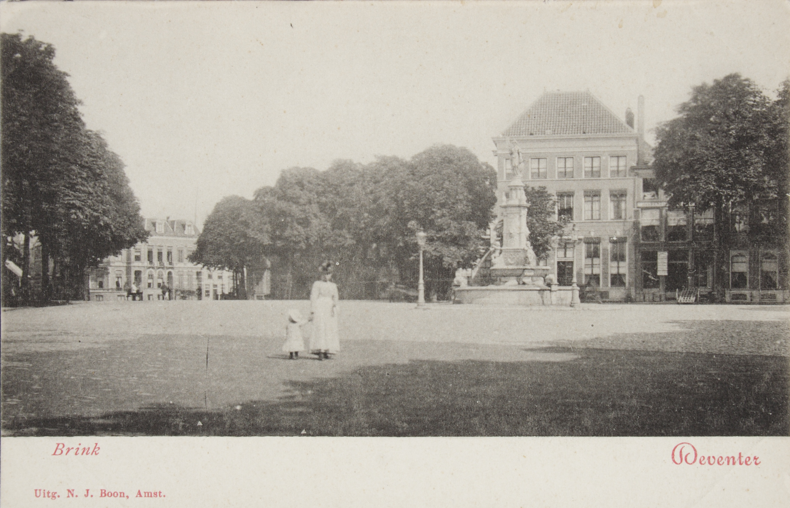
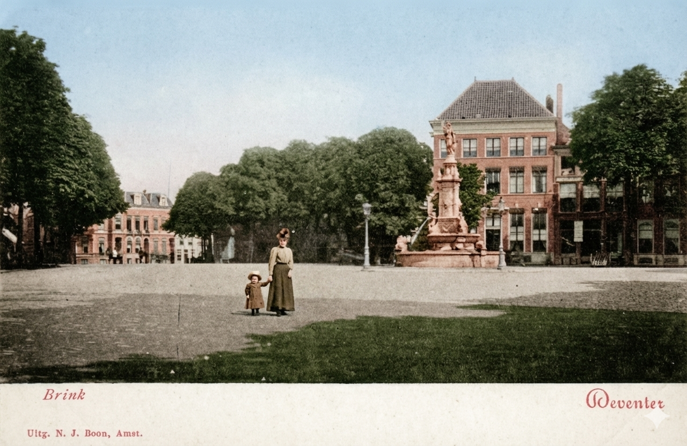
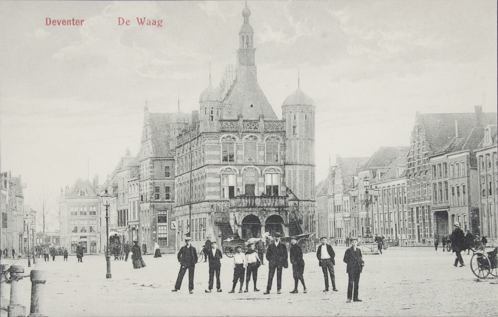
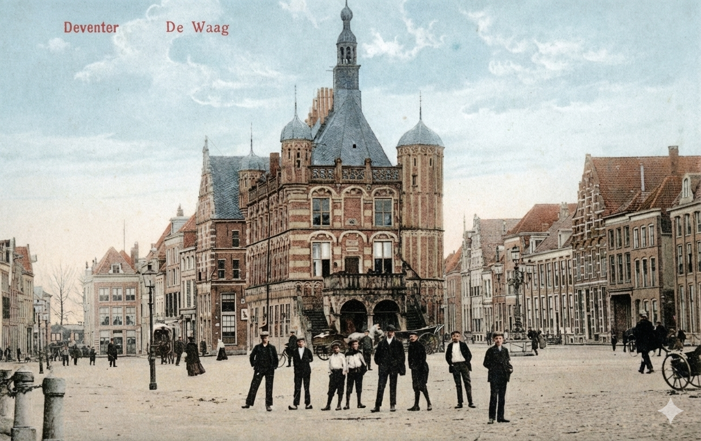

Discover centuries of history hidden in the streets of Deventer. Listen to stories, compare past and present, and see the city as it was over 125 years ago.
Four ways to experience Deventer's rich past, right from your phone.
Each location has its own narrated story. Put in your earbuds, walk through the city, and let history speak to you.
Slide between historical and present-day photographs. See how buildings, streets, and landmarks have transformed over the centuries.
Toggle a detailed historical map over today's streets. Watch the city of 1899 appear beneath your feet as you explore.
Visit locations to earn unique badges. Track your progress and become a true Deventer history expert.
Drag the slider to travel between past and present.


Then NowDe Brink — Deventer's historic market square through the ages
Three simple steps to start your journey through time.
Get the free app and head to Deventer's city center. Works best on location — but feel free to explore from home too.
The app detects when you're near a historic site. Walk at your own pace — there's no fixed route.
Listen to stories, compare historic photos, and uncover the hidden layers of the city around you.
Medieval churches, Renaissance houses, centuries-old market squares — each with its own story.


From the Brink to the Bergkwartier — a walk through 1000 years of history.
Download Walk Through Time for free and start exploring Deventer's hidden history today.